전기산업기사 (2014-05-25 기출문제)
1과목: 전기자기학
1. 역자성체 내에서 비투자율 μs는?
- μs ≫ 1
- μs ＞ 1
- μs ＜ 1
- μs = 1
(정답률: 77%)

2. 반지름 1m의 원형 코일에 1A의 전류가 흐를 때 중심점의 자계의 세기는 몇 AT/m 인가?
- 1/4
- 1/2
- 1
- 2
(정답률: 81%)
3. 무한 평면에 일정한 전류가 표면에 한 방향으로 흐르고 있다. 평면으로부터 위로 r만큼 떨어진 점과 아래로 2r만큼 떨어진 점과의 자계의 비 및 서로의 방향은?
- 1, 반대방향
- √2, 같은 방향
- 2, 반대방향
- 4, 같은 방향
(정답률: 45%)
4. 면적 S[m2], 간격 d[m]인 평행판 콘덴서에 그림과 같이 두께 d1, d2[m]이며 유전율 ℇ1, ℇ2[F/m]인 두 유전체를 극판 간에 평행으로 채웠을 때 정전용량 [F]은?
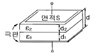
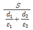
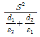
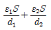
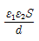
(정답률: 64%)
5. 자유공간 중의 전위계에서 V=5(x2+2y2-3z2)일 때 점 P(2, 0, -3)에서의 전하밀도 p의 값은?
- 0
- 2
- 7
- 9
(정답률: 67%)
6. 유전율 ℇ[F/m]인 유전체 중에서 전하가 Q[C], 전위가 V[V], 반지름a[m]인 도체구가 갖는 에너지는 몇 J인가?
- 1/2πℇaV2
- πℇaV2
- 2πℇaV2
- 4πℇaV2
(정답률: 60%)
7. 10mH 인덕턴스 2개가 있다. 결합계수를 0.1로부터 0.9까지 변화시킬 수 있다면 이것을 직렬 접속시켜 얻을 수 있는 합성인덕턴스의 최대값과 최소값의 비는?(오류 신고가 접수된 문제입니다. 반드시 정답과 해설을 확인하시기 바랍니다.)
- 9:1
- 13:1
- 16:1
- 19:1
(정답률: 62%)
8. 접지 구도체와 점전하 사이에 작용하는 힘은?
- 항상 반발력이다.
- 항상 흡입력이다.
- 조건적 반발력이다.
- 조건적 흡입력이다.
(정답률: 84%)
9. 지면에 평행으로 높이 h[m]에 가설된 반지름 a[m]인 가공직선 도체의 대지간 정전용량은 몇 [F/m]인가? (단, h ≫ a이다.)
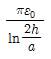
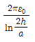
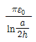
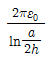
(정답률: 61%)
10. 그림과 같이 내외 도체의 반지름이 a, b인 동축선(케이블)의 도체 사이에 유전율이 ℇ인 유전체가 채워져 있는 경우 동축선의 단위 길이당 정전용량은?
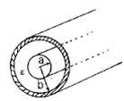
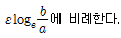
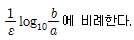
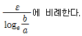
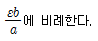
(정답률: 71%)
11. 진공 중에서 어떤 대전체의 전속이 Q이었다. 이 대전체를 비유전율 2.2인 유전체 속에 넣었을 경우의 전속은?
- Q
- 2.2Q/ℇ
- Q/2.2ℇ
- 2.2Q
(정답률: 66%)
12. 다음 중 사람의 눈이 색을 다르게 느끼는 것은 빛의 어떤 특성이 다르기 때문인가?
- 굴절률
- 속도
- 편광 방향
- 파장
(정답률: 74%)
13. 지름 20cm의 구리로 만든 반구의 볼에 물을 채우고 그 중에 지름 10cm의 구를 띄운다. 이때에 양구가 동심구라면 양구간의 저항[Ω]은 약 얼마인가? (단, 물의 도전율은 10-3℧/m이고 물은 충만되어 있다.)
- 159
- 1590
- 2800
- 2850
(정답률: 55%)
14. 두 벡터 A=Axi+2j, B=3i-3j-k가 서로 직교하려면 Ax의 값은?
- 0
- 2
- 1/2
- -2
(정답률: 49%)
15. 전하 8π[C]이 8 m/s의 속도로 진공 중을 직선운동하고 있다면, 이 운동 방향에 대하여 각도 θ이고, 거리 4m 떨어진 점의 자계의 세기는 몇 A/m인가?
- cosθ
- 1/2sinθ
- sinθ
- 2sinθ
(정답률: 48%)
16. 전계 내에서 폐회로를 따라 전하를 일주시킬 때 전계가 행하는 일은 몇 J인가?
- ∞
- π
- 1
- 0
(정답률: 81%)
17. 다음의 멕스웰 방정식 중 틀린 것은?
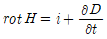
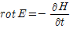
- divB=0
- divD=p
(정답률: 79%)
18. 단면적이 같은 자기회로가 있다. 철심의 투자율을 μ라 하고 철심회로의 길이를 l이라 한다. 지금 그 일부에 미소공극 l0를 만들었을 때 자기회로의 자기저항은 공극이 없을때의 약 몇 배인가?
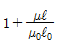
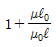
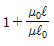
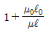
(정답률: 69%)
19. 전류와 자계 사이의 힘의 효과를 이용한 것으로 자유로이 구부릴 수 있는 도선에 대전류를 통하면 도선 상호간에 반발력에 의하여 도선이 원을 형성하는데 이와 같은 현상은?
- 스트레치 효과
- 핀치 효과
- 홀효과
- 스킨효과
(정답률: 62%)
20. 두 평형 왕복 도선사이의 도선 외부의 자기인덕턴스는 몇 H/m인가? (단, r은 도선의 반지름, D는 두 왕복 도선 사이의 거리이다.)
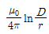
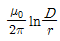
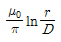
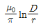
(정답률: 44%)
2과목: 전력공학
21. 선로의 단락보호용으로 사용되는 계전기는?
- 접지 계전기
- 역상 계전기
- 재폐로 계전기
- 거리 계전기
(정답률: 61%)
22. 송전 계통의 중성점을 직접 접지하는 목적과 관계없는 것은?
- 고장전류 크기의 억제
- 이상전압 발생의 방지
- 보호계전기의 신속 정확한 동작
- 전선로 및 기기의 절연 레벨을 경감
(정답률: 54%)
23. 옥내배선의 보호방법이 아닌것은?
- 과전류 보호
- 지락 보호
- 전압강하 보호
- 절연 접지 보호
(정답률: 56%)
24. 송전선로에 근접한 통신선에 유도장해가 발생하였다. 전자유도의 원인은?
- 역상 전압
- 정상 전압
- 정상 전류
- 영상 전류
(정답률: 81%)
25. 배전선로 개폐기 중 반드시 차단기능이 있는 후비 보조 장치와 직렬로 설치하여 고장구간을 분리시키는 개폐기는?
- 컷아웃 스위치
- 부하 개폐기
- 리클로저
- 섹셔널라이저
(정답률: 59%)
26. 가공 송전선에 사용되는 애자 1연 중 전압 부담이 최대인 애자는?
- 철탑에 제일 가까운 애자
- 전선에 제일 가까운 애자
- 중앙에 있는 애자
- 전선으로부터 1/4 지점에 있는 애자
(정답률: 78%)
27. 다음은 무엇을 결정할 때 사용되는 식인가? (단, l은 송전거리[km]이고, P는 송전전력[kW]이다.)
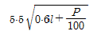
- 송전전압
- 송전선의 굵기
- 역률 개선시 콘덴서의 용량
- 발전소의 발전전압
(정답률: 70%)
28. 자가용 변전소의 1차측 차단기의 용량을 결정할 때 가장 밀접한 관계가 있는 것은?
- 부하설비 용량
- 공급측의 단락 용량
- 부하의 부하율
- 수전계약 용량
(정답률: 68%)
29. 일반적으로 수용가 상호간, 배전변압기 상호간, 급전선 상호간 또는 변전소 상호간에서 각각의 최대부하는 그 발생 시각이 약간씩 다르다. 따라서 각각의 최대수요 전력의 합계는 그 군의 종합 최대수요전력보다도 큰 것이 보통이다. 이 최대전력의 발생시각 또는 발생시기의 분산을 나타내는 지표는?
- 전일효율
- 부등률
- 부하율
- 수용률
(정답률: 74%)
30. 다음 중 SF 가스 차단기의 특징이 아닌것은?
- 밀폐구조로 소음이 작다.
- 근거리 고장 등 가혹한 재기 전압에 대해서도 우수하다.
- 아크에 의해 SF6 가스가 분해되며 유독가스를 발생시킨다.
- SF6 가스의 소호능력은 공기의 100~200배이다.
(정답률: 82%)
31. 3상 3선식에서 전선의 선간거리가 각각 1m, 2m, 4m로 삼각형으로 배치되어 있을 때 등가선간거리는 몇 m인가?
- 1
- 2
- 3
- 4
(정답률: 67%)
32. 원자로 내에서 발생한 열에너지를 외부로 끄집어내기 위한 열매체를 무엇이라고 하는가?
- 반사체
- 감속재
- 냉각재
- 제어봉
(정답률: 71%)
33. 송전선로에 복도체를 사용하는 가장 주된 목적은?
- 건설비를 절감하기 위하여
- 진동을 방지하기 위하여
- 전선의 이도를 주기 위하여
- 코로나를 방지하기 위하여
(정답률: 81%)
34. 선로 임피던스 Z, 송수전단 양쪽에 어드미턴스 Y인 π형 회로의 4단자 정수에서 B의 값은?
- Y
- Z
- 1+ ZY/2
- Y + (1+ZY/4)
(정답률: 62%)
35. 수전단 전압이 송전단 전압보다 높아지는 현상을 무엇이라 하는가?
- 옵티마 현상
- 자기 여자 현상
- 페란티 현상
- 동기화 현상
(정답률: 82%)
36. 출력 20kW의 전동기로서 총 양정 10m, 펌프효율 0.75일 때 양수량은 몇 m3/min인가?
- 9.18
- 9.85
- 10.31
- 11.02
(정답률: 49%)
37. 전압이 일정값 이하로 되었을 때 동작하는 것으로서 단락시 고장 검출용으로도 사용되는 계전기는?
- OVR
- OVGR
- NSR
- UVR
(정답률: 74%)
38. 취수구에 제수문을 설치하는 목적은?
- 모래를 배제한다.
- 홍수위를 낮춘다.
- 유량을 조절한다.
- 낙차를 높인다.
(정답률: 83%)
39. 송전단 전압 161kV, 수전단 전압 154kV, 상차각 45도, 리액턴스 14.14Ω일 때, 선로손실을 무시하면 전송전력은 몇 MW인가?
- 1753
- 1518
- 1240
- 877
(정답률: 56%)
40. 연가를 하는 주된 목적에 해당되는 것은?
- 선로정수를 평형 시키기 위하여
- 단락사고를 방지하기 위하여
- 대전력을 수송하기 위하여
- 페란티 현상을 줄이기 위하여
(정답률: 81%)
3과목: 전기기기
41. 동기 발전기의 병렬운전조건에서 같지 않아도 되는 것은?
- 기전력
- 위상
- 주파수
- 용량
(정답률: 74%)
42. 다음 중 반자성 특성을 갖는 자성체는?
- 규소강판
- 초전도체
- 페리자성체
- 네오디뮴 자석
(정답률: 63%)
43. 직류 분권 발전기의 무부하 포화 곡선이
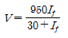
이고, If는 계자전류[A], V는 무부하 전압[V]으로 주어질 때 계자 회로의 저항이 25[Ω]이면, 몇 [V]의 전압이 유기되는가?- 200
- 250
- 280
- 300
(정답률: 42%)
44. 권선형 유도전동기에서 비례추이를 할 수 없는 것은?
- 회전력
- 1차 전류
- 2차 전류
- 출력
(정답률: 68%)
45. 용량 150[kVA]의 단상 변압기의 철손이 1[kW], 전부하 동손이 4[kW]이다. 이 변압기의 최대효율은 몇 [kVA]에서 나타나는가?
- 50
- 75
- 100
- 150
(정답률: 68%)
46. 전력용 MOSFET와 전력용 BJT에 대한 설명 중 틀린 것은?
- 전력용 BJT는 전압제어소자로 온 상태를 유지하는데 거의 무시할 만큼 전류가 필요로 한다.
- 전력용 MOSFET는 비교적 스위칭 시간이 짧아 높은 스위칭 주파수로 사용할 수 있다.
- 전력용 BJT는 일반적으로 턴온 상태에서의 전압강하가 전력용 MOSFET보다 작아 전력손실이 적다.
- 전력용 MOSFET는 온오프 제어가 가능한 소자이다.
(정답률: 47%)
47. 단상 유도전동기의 기동방법 중 기동 토크가 가장 큰 것은?
- 반발 기동형
- 반발 유도형
- 콘덴서 기동형
- 분상 기동형
(정답률: 76%)
48. 단락비가 큰 동기기는?
- 안정도가 높다.
- 전압변동률이 크다.
- 기계가 소형이다.
- 전기자 반작용이 크다.
(정답률: 64%)
49. 단상 전파 제어 정류 회로에서 순저항 부하일 때의 평균 출력 전압은? (단, Vm은 인가 전압의 최대값이고 점호각은 ∝이다.)
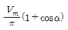
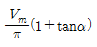
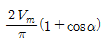
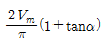
(정답률: 60%)
50. 직류 분권전동기의 공급 전압의 극성을 반대로 하면 회전 방향은 어떻게 되는가?
- 변하지 않는다.
- 반대로 된다.
- 발전기로 된다.
- 회전하지 않는다.
(정답률: 62%)
51. "권선형 유도전동기에서 2차 저항을 증가시키면 기동 전류는 (㉠)하고 기동 토크는 (㉡)하며, 2차 회로의 역률이 (㉢)되고 최대 토크는 일정하다."의 설명에서 빈칸 ㉠ ~ ㉢에 알맞은 말은?
- ㉠감소, ㉡증가, ㉢좋아지게
- ㉠감소, ㉡감소, ㉢좋아지게
- ㉠감소, ㉡증가, ㉢나빠지게
- ㉠증가, ㉡감소, ㉢나빠지게
(정답률: 60%)
52. 10[kVA], 2000/380[V]의 변압기 1차 환산 등가임피던스가 3+j4[Ω]이다. %임피던스 강하는 몇 [%]인가?
- 0.75
- 1.0
- 1.25
- 1.5
(정답률: 60%)
53. 동기 조상기를 부족여자로 사용하면?
- 리액터로 작용
- 저항손의 보상
- 일반 부하의 뒤진 전류를 보상
- 콘덴서로 작용
(정답률: 66%)
54. 직류 분권 전동기의 운전 중 계자 저항기의 저항을 증가하면 속도는 어떻게 되는가?
- 변하지 않는다.
- 증가한다.
- 감소한다.
- 정지한다.
(정답률: 67%)
55. 사이리스터 특성에 대한 설명 중 틀린 것은?
- 하나의 스위치 작용을 하는 반도체이다.
- pn접합을 여러개 적당히 결합한 전력용 스위치이다.
- 사이리스터를 턴온시키기 위해 필요한 최소의 순방향 전류를 래칭전류라 한다.
- 유지전류는 래칭전류보다 크다.
(정답률: 55%)
56. E1=2000[V], E2=100[V]의 변압기에서 r1=0.2[Ω], r2=0.00⑤[Ω], x1=0.0⑤[Ω]이다. 권수비 a는?
- 60
- 30
- 20
- 10
(정답률: 70%)
57. 출력이 20[kW]인 직류발전기의 효율이 80[%]이면 손실[kW]은 얼마인가?
- 1
- 2
- 5
- 8
(정답률: 55%)
58. 단상 교류 정류자 전동기의 직권형에 가장 적합한 부하는?
- 치과 의료용
- 펌프용
- 송풍기용
- 공작 기계용
(정답률: 75%)
59. 전기자를 고정자로하고, 계자극을 회전자로 한 회전자계형으로 가장 많이 사용되는 것은?
- 직류 발전기
- 회전 변류기
- 동기 발전기
- 유도 발전기
(정답률: 66%)
60. 영판(name plate)에 정격전압 220[V], 정격전류 14.4[A], 출력 3.7[kW]로 기재되어 있는 3상 유도전동기가 있다. 이 전동기의 역률을 84[%]라 할때 이 전동기의 효율[%]은?
- 78.25
- 78.84
- 79.15
- 80.27
(정답률: 51%)
4과목: 회로이론
61. 1차 지연 요소의 전달함수는?
- K
- K/s
- Ks
- K/1+Ts
(정답률: 63%)
62. 그림과 같은 회로에서 공진시의 어드미턴스[℧]는?
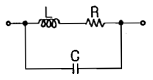
- CR/L
- LC/R
- C/RL
- R/LC
(정답률: 60%)
63. 어떤 회로에 e=200∠π/3[V]의 전압을 가하니 I=10√3+j10[A]의 전류가 흘렀다. 이 회로의 무효전력[Var]은?
- 707
- 1000
- 1732
- 2000
(정답률: 45%)
64. 3상 불평형 전압에서 영상전압이 150[V]이고 정상전압이 500[V], 역상전압이 300[V]이면 전압의 불평형률[%]은?
- 70
- 60
- 50
- 40
(정답률: 72%)
65. 어떤 제어계의 출력이
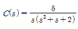
로 주어질 때 출력의 시간함수 c(t)의 정상값은?- 5
- 2
- 2/5
- 5/2
(정답률: 74%)
66. 그림과 같은 회로에서 정전용량 C[F]를 충전한 후 스위치 S를 닫아서 이것을 방전할 때 과도전류는? (단, 회로에는 저항이 없다.)
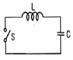
- 주파수가 다른 전류
- 크기가 일정하지 않은 전류
- 증가 후 감쇠하는 전류
- 불변의 진동 전류
(정답률: 51%)
67. 저항 4Ω과 유도 리액턴스 XLΩ이 병렬로 접속된 회로에 12[V]의 교류전압을 가하니 5[A]의 전류가 흘렀다. 이 회로의 XL[Ω]은?
- 8
- 6
- 3
- 1
(정답률: 53%)
68. 다음 용어 설명 중 틀린 것은?
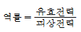
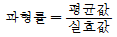
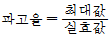
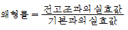
(정답률: 70%)
69. 3상 회로의 영상분, 정상분, 역상분을 각각 I0, I1, I2라 하고 선전류를 Ia, Ib, Ic라 할 때 Ib는? (단,
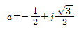
이다.)- I0+I1+I2
- 1/3(I0+I1+I2)
- I0+a2I1+aI2
- 1/3(I0+aI1+a2I2
(정답률: 62%)
70. 그림과 같은 구형파의 라플라스 변환은?
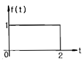
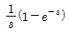
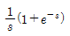
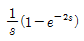
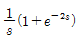
(정답률: 57%)
71. 3대의 단상변압기를 △결선으로 하여 운전하던 중 변압기 1대가 고장으로 제거하여 V결선으로 한 경우 공급할 수 있는 전력은 고장전 전력의 몇 %인가?
- 57.7
- 50.0
- 63.3
- 67.7
(정답률: 77%)
72. 정상상태에서 시간 t=0일 때 스위치 s를 열면 흐르는 전류 i는?
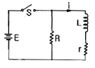
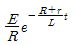
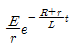
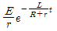
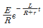
(정답률: 41%)
73. 어떤 코일의 임피던스를 측정하고자 직류전압 100[V]를 가했더니 500[W]가 소비되고, 교류전압 150[V]를 가했더니 720[W]가 소비되었다. 코일의 저항 [Ω]과 리액턴스[Ω]는 각각 얼마인가?
- R=20, XL=15
- R=15, XL=20
- R=25, XL=20
- R=30, XL=25
(정답률: 61%)
74. 단자 a-b에 30V의 전압을 가했을 때 전류 I는 3[A]가 흘렀다고 한다. 저항 r[Ω]은 얼마인가?
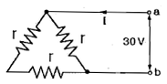
- 5
- 10
- 15
- 20
(정답률: 62%)
75. 그림과 같은 회로망에서 Z1을 4단자 정수에 의해 표시하면 어떻게 되는가?
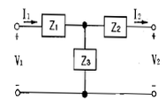
- 1/C
- D-1/C
- B-1/C
- A-1/C
(정답률: 62%)
76. 그림과 같은 회로에서 임피던스 파라미터 Z11은?
- sL1
- sM
- sL1L2
- sL2
(정답률: 51%)
77. RL 병렬회로의 합성 임피던스[Ω]는? (단, w[rad/s] 이 회로의 각 주파수이다.)
(정답률: 45%)
78. 어떤 회로에 흐르는 전류가 i=7+14.1sinwt[A]인 경우 실효값은 약 몇 [A]인가?
- 11.2
- 12.2
- 13.2
- 14.2
(정답률: 56%)
79. f(t)=At2의 라플라스 변환은?
- A/s2
- 2A/s2
- A/s3
- 2A/s3
(정답률: 60%)
80. 3상 유도 전동기의 출력이 3.7kW, 선간전압 200V, 효율 90%, 역률 80% 일 때, 이 전동기에 유입되는 선전류는 약 몇 A인가?
- 8
- 10
- 12
- 15
(정답률: 55%)
5과목: 전기설비기술기준 및 판단 기준
81. 발전소 등의 울타리 담 등을 시설할 때 사용전압이 154kV인 경우 울타리 담 등의 높이와 울타리 담 등으로부터 충전부분까지의 거리의 합계는 몇 m 이상이어야 하는가?
- 5
- 6
- 8
- 10
(정답률: 59%)
82. 중성점 접지식 22.9kV 가공전선과 직류 1500V 전차선을 동일 지지물에 병가할 때 상호간의 이격거리는 몇 m 이상인가?
- 1.0
- 1.2
- 1.5
- 2.0
(정답률: 25%)
83. 지선 시설에 관한 설명으로 틀린 것은?
- 철탑은 지선을 사용하여 그 강도를 분담시켜야 한다.
- 지선의 안전율은 2.5 이상이어야 한다.
- 지선에 연선을 사용할 경우 소선 3가닥 이상의 연선이어야 한다.
- 지선 근가는 지선의 인장하중에 충분히 견디도록 시설하여야 한다.
(정답률: 70%)
84. 사용전압 66kV의 가공전선을 시가지에 시설할 경우 전선의 지표상 최소 높이는 몇 m인가?
- 6.48
- 8.36
- 10.48
- 12.36
(정답률: 48%)
85. 시가지 등에서 특고압 가공전선로를 시설하는 경우 특고압 가공전선로용 지지물로 사용할 수 없는 것은? (단, 사용전압이 170kV 이하인 경우이다.)
- 철탑
- 철근 콘크리트주
- A종 철주
- 목주
(정답률: 69%)
86. 전기설비의 접지계통과 건축물의 피뢰설비 및 통신설비 등의 접지극을 공용하는 통합 접지공사를 하는 경우 낙뢰등 과전압으로부터 전기설비를 보호하기 위하여 설치해야 하는 것은?
- 과전류 차단기
- 지락 보호 장치
- 서지 보호 장치
- 개폐기
(정답률: 56%)
87. 가공 직류 전차선의 레일면상의 높이는 몇 m 이상이어야 하는가?
- 6.0
- 5.5
- 5.0
- 4.8
(정답률: 44%)
88. 가요전선관 공사에 의한 저압 옥내배선으로 틀린 것은?
- 2종 금속제 가요전선관을 사용하였다.
- 사용전압이 380V 이므로 가요전선관에 제 3종 접지공사를 하였다.
- 전선으로 옥외용 비닐 절연전선을 사용하였다.
- 사용전압 440V에서 사람이 접촉할 우려가 없어 제 3종 접지공사를 하였다.
(정답률: 65%)
89. 특고압 가공전선이 도로 등과 교차하여 도로 상부측에 시설할 경우에 보호망도 같이 시설하려고 한다. 보호망은 제 몇 종 접지공사로 하여야 하는가?(관련 규정 개정전 문제로 여기서는 기존 정답인 1번을 누르면 정답 처리됩니다. 자세한 내용은 해설을 참고하세요.)
- 제 1종 접지공사
- 제 2종 접지공사
- 제 3종 접지공사
- 특별 제 3종 접지공사
(정답률: 56%)
90. 저압 가공전선과 고압 가공전선을 동일 지지물에 시설하는 경우 이격거리는 몇 cm 이상이어야 하는가?
- 50
- 60
- 70
- 80
(정답률: 42%)
91. 옥내의 네온 방전등 공사에 대한 설명으로 틀린 것은?
- 방전등용 변압기는 네온 변압기일 것
- 관등회로의 배선은 점검할 수 없는 은폐장소에 시설할 것
- 관등회로의 배선은 애자사용 공사에 의하여 시설할 것
- 방전등용 변압기의 외함에는 제 3종 접지공사를 할 것
(정답률: 63%)
92. 사용전압 220V인 경우에 애자사용 공사에 의한 옥측 전선로를 시설할 때 전선과 조영재와의 이격거리는 몇 cm이상 이어야 하는가?
- 2.5
- 4.5
- 6
- 8
(정답률: 54%)
93. 사용전압 66kV 가공전선과 6kV 가공전선을 동일 지지물에 시설하는 경우, 특고압 가공전선은 케이블인 경우를 제외하고는 단면적이 몇 mm2인 경동연선 또는 이와 동등 이상의 세기 및 굵기의 연선이어야 하는가?(오류 신고가 접수된 문제입니다. 반드시 정답과 해설을 확인하시기 바랍니다.)
- 22
- 38
- 55
- 100
(정답률: 56%)
94. 가공전선 및 지지물에 관한 시설기준 중 틀린것은?
- 가공전선은 다른 가공전선로, 전차선로, 가공 약전류 전선로 또는 가공 광섬유 케이블 선로의 지지물을 사이에 두고 시설하지 말 것
- 가공전선의 분기는 그 전선의 지지점에서 할 것(단, 전선의 장력이 가하여지지 않도록 시설하는 경우는 제외)
- 가공전선로의 지지물에는 승탑 및 승주를 할 수 없도록 발판 못 등을 시설하지 말 것
- 가공전선로의 지지물로는 목주, 철주, 철근콘크리트주 또는 철탑을 사용할 것
(정답률: 60%)
95. 300kHz부터 3000kHz까지의 주파수대에서 전차선로에서 발생하는 전파의 허용한도 상대레벨의 준첨두 값[dB]은?
- 25.5
- 32.5
- 36.5
- 40.5
(정답률: 49%)
96. 수소냉각식 발전기 및 이에 부속하는 수소냉각장치에 관한 시설기준 중 틀린 것은?
- 발전기안의 수소의 압력 계측장치 및 압력 변동에 대한 경보 장치를 시설할 것
- 발전기안의 수소 온도를 계측하는 장치를 시설할 것
- 발전기는 기밀 구조이고 또한 수소가 대기압에서 폭발하는 경우에 생기는 압력에 견디는 강도를 가지는 것일 것
- 발전기안의 수소의 순도가 70% 이하로 저하한 경우에 경보를 하는 장치를 시설할 것
(정답률: 74%)
97. 과전류 차단기로 시설하는 퓨즈 중 고압 전로에 사용되는 포장 퓨즈는 정격 전류의 몇 배의 전류에 견디어야 하는가?
- 1.1
- 1.2
- 1.3
- 1.5
(정답률: 52%)
98. 저압 옥내배선을 합성수지관 공사에 의하여 실시하는 경우 사용할 수 있는 단선(동선)의 최대 단면적은 몇 mm2인가?
- 4
- 6
- 10
- 16
(정답률: 39%)
99. 가반형의 용접전극을 사용하는 아크 용접장치를 시설할 때 용접변압기의 1차측 전로의 대지전압은 몇 V 이하이어야 하는가?
- 200
- 250
- 300
- 600
(정답률: 73%)
100. 저압전로에 사용하는 80A 퓨즈는 수평으로 붙일 경우 정격 전류의 1.6배 전류에 몇 분 안에 용단되어야 하는가?
- 60
- 120
- 180
- 240
(정답률: 61%)